adobe
tools
process guide
Panels, scripts and automations built for the Adobe applications. What every control does, how a file travels from the canvas out to whatever does the work and back again, and the things each one needs you to remember.
13 tools
01
nano banana bridge
Sends the canvas and a marked-up selection to Nano Banana, then brings the result back as a masked layer.
photoshop
 11
printlook
Prints your layers: each colour layer is a plate with one ink, put through letterpress, lithography, screenprint, gravure, stencil, duplicator or copier as it was done from the 1850s to the 1980s.
photoshop
11
printlook
Prints your layers: each colour layer is a plate with one ink, put through letterpress, lithography, screenprint, gravure, stencil, duplicator or copier as it was done from the 1850s to the 1980s.
photoshop
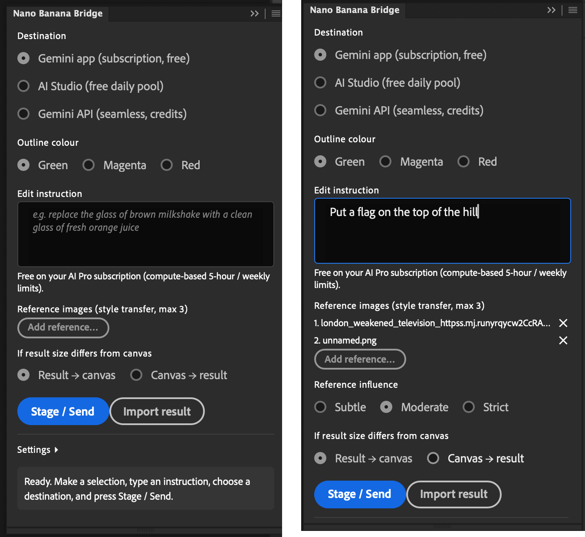
02 glitchslice Slices a layer into strips and scatters them — the criss-cross glitch pass, one direction at a time. photoshop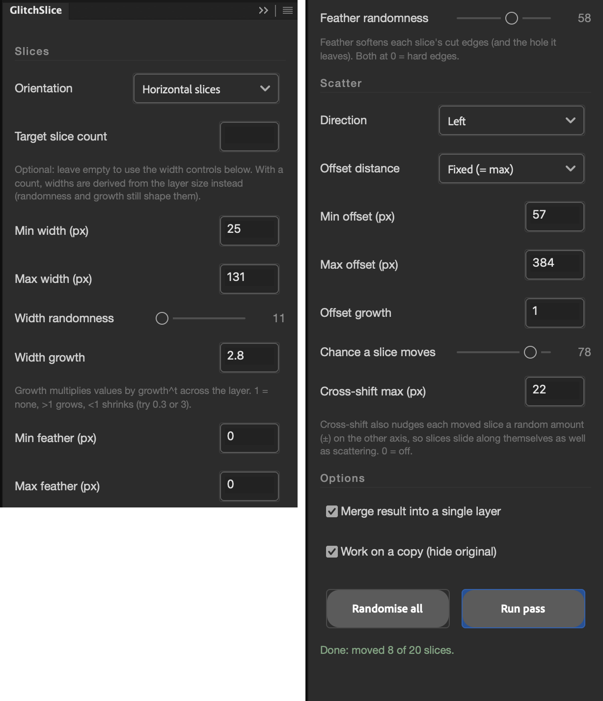
03 signal degrade One pass of lo-fi abuse: misregistration, halo, crush, grain, vignette — any stage at 0 is skipped. photoshop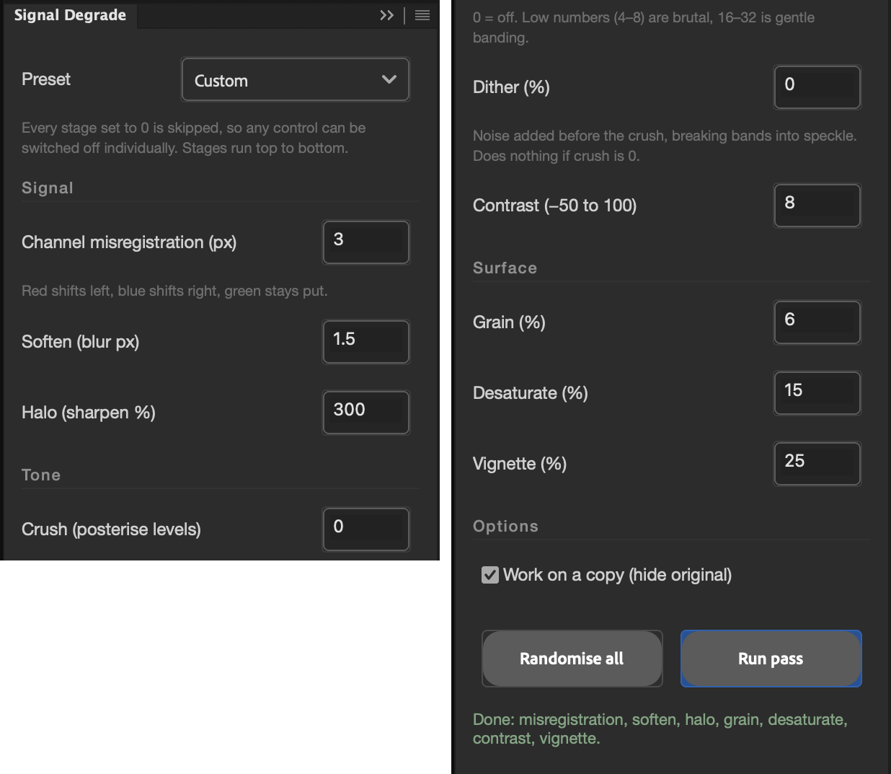
04 static Generates a canvas-sized noise layer from mixable ingredients — radio static, hum bars, scanlines, dropout. photoshop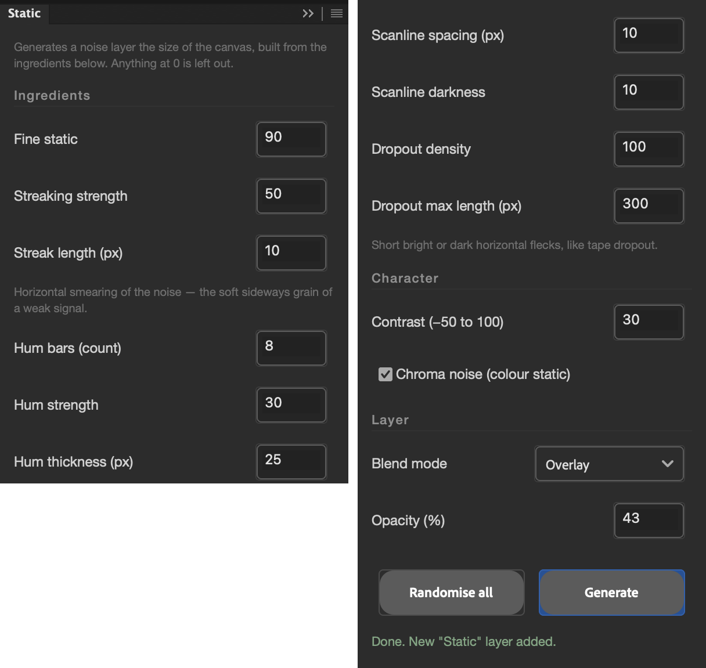
05 row jitter Shifts every horizontal band of a layer sideways — VHS tracking, worn tape, a scan gone wrong. photoshop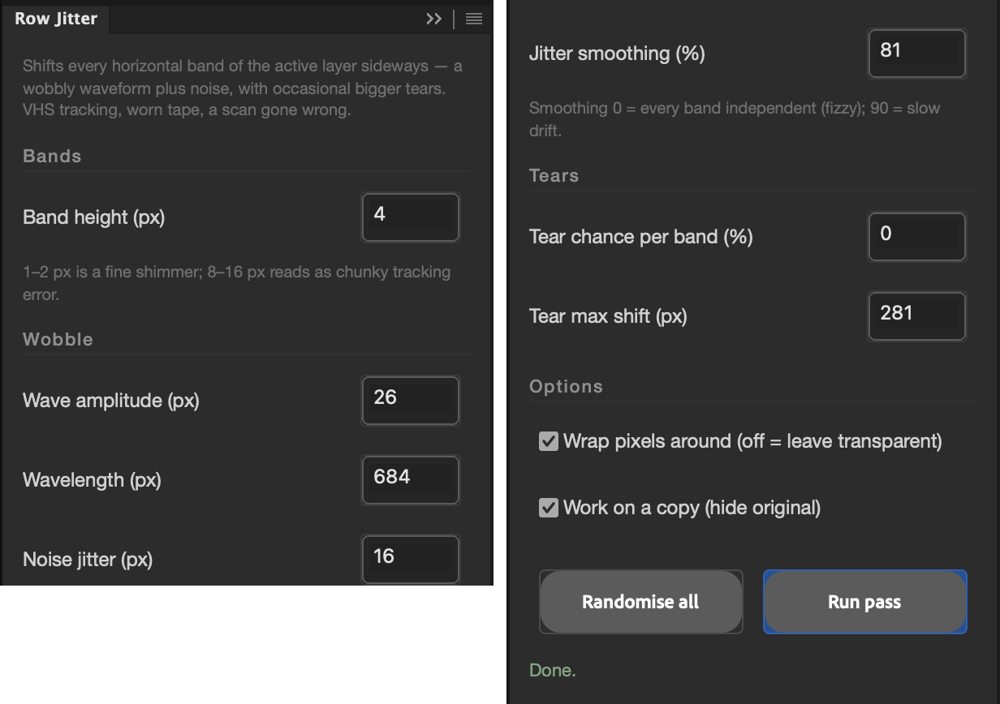
06 misregistered print The cheap-print look: halftone dots, colour plates out of register, paper grain and warmth. photoshop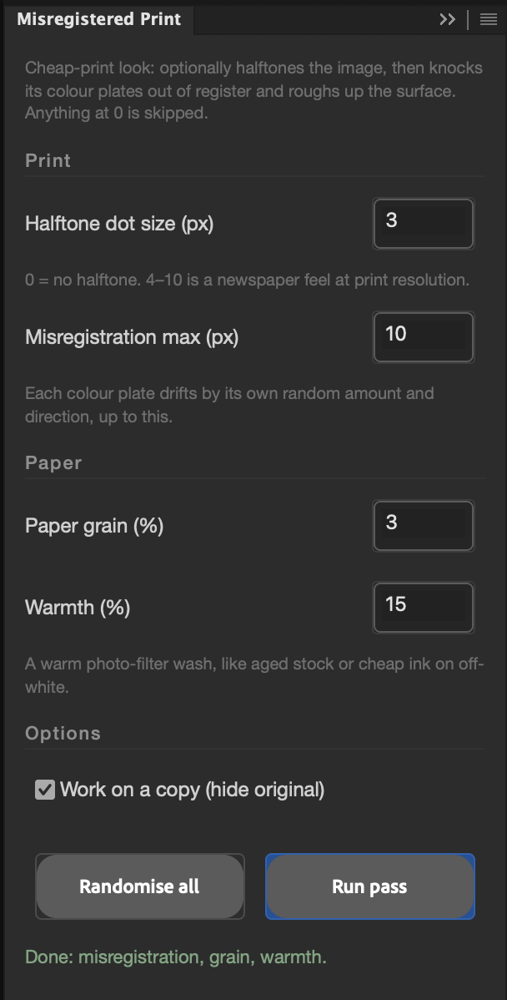
07 patchscatter Copies random patches of a layer and drops them at random positions on a Scatter layer above it — optionally feeding on its own output. photoshop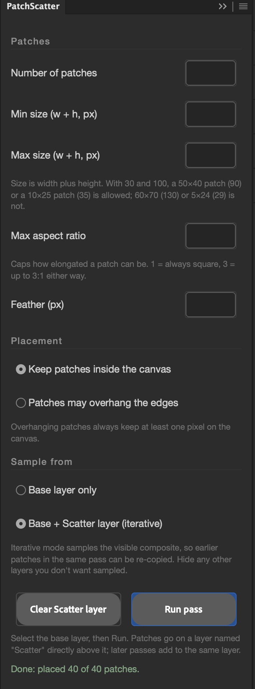
08 ditherpress Twenty-two dither algorithms, a dot-scale control and four colour modes, rendered to a new layer. photoshop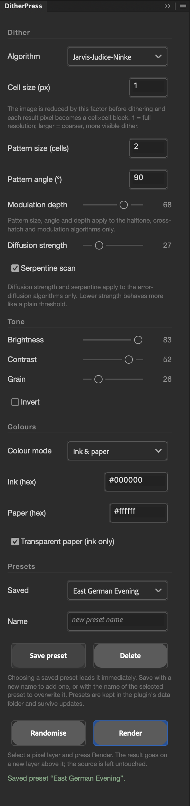
09 filmlook Film emulation from 1920s tinted nitrate to 1980s anamorphic: stocks, gauges, lenses, print wear and 70 film presets. photoshop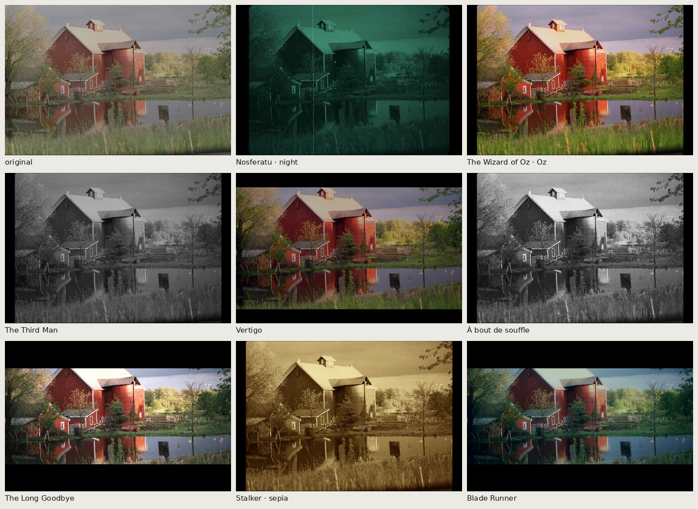
10 videolook Television and video looks from Baird's 30 lines to DV: 405-line to PAL, NTSC and SECAM, Soviet, Japanese and pre-war systems, long-distance reception, tube cameras, Quad to VHS, discs, teletext and CRT sets. photoshop
11
printlook
Prints your layers: each colour layer is a plate with one ink, put through letterpress, lithography, screenprint, gravure, stencil, duplicator or copier as it was done from the 1850s to the 1980s.
photoshop
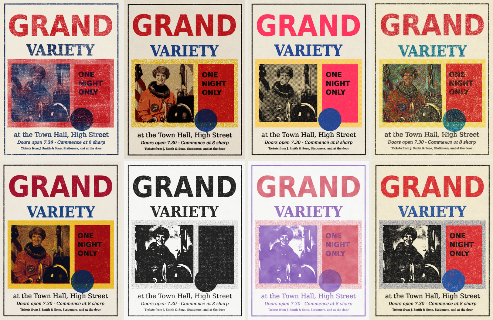
12 look cookbook Recipes for FilmLook and VideoLook, alone and chained: kitchen-sink titles, community cable, video art, artists' film and video-to-film oddities. photoshop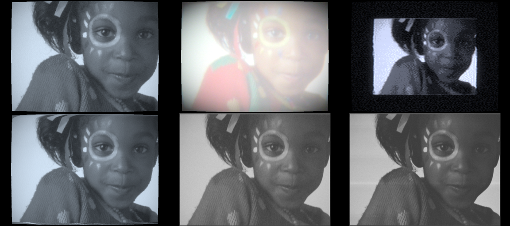
13 poster pdf export Drop a finished Illustrator poster into a folder and five print-ready GRACoL PDFs appear on the Desktop. indesign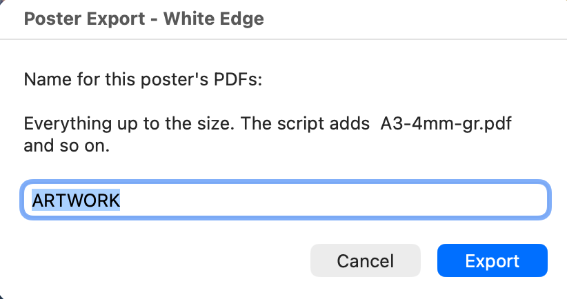
nothing matches that.